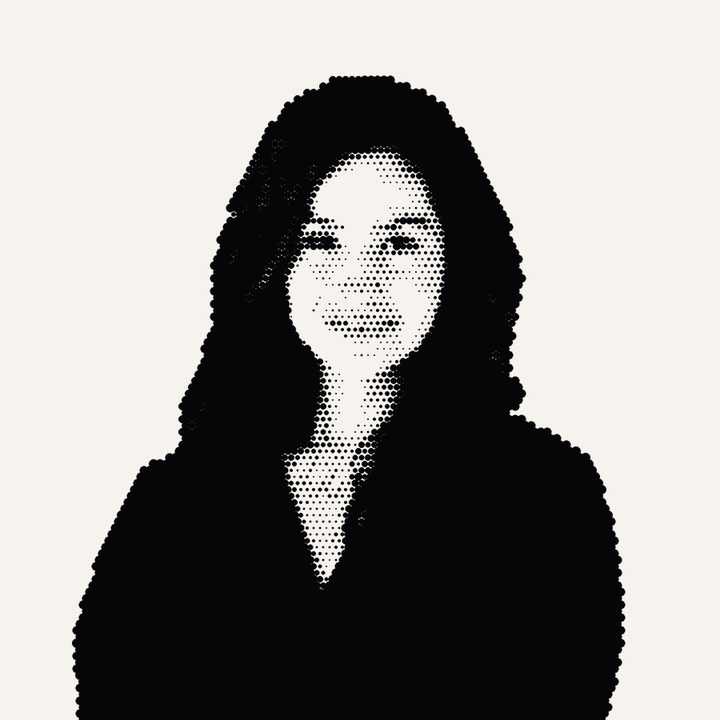

Catalina Moreno
Founder · Autia Lab
Fundadora · Autia Lab
Catalina Moreno combines international business experience with a hands-on understanding of AI.
She has been working since 2021 with companies and stakeholders from many different industries. From the start, her role went beyond giving advice: she got involved in how companies actually operate, finding the bottlenecks that slowed them down and implementing innovative solutions to clear them. Close to the technology ecosystem, she began building with generative AI from the first release of ChatGPT in November 2022.
Her career began in Colombia, working with clients from different industries. That practical experience led her to pursue a Master's in Innovation for Business and Institutions and a Master's in Law, Data and AI, which gave her an international perspective across the Irish and British markets and experience in Ireland, Spain and Italy, in fast-growing environments where better technology and workflows were a necessity, not a nice-to-have.
She worked in the technology and innovation group of a large Irish firm, managing projects and engaging with stakeholders from many industries. There, more than giving legal advice, she got involved in clients' operations and looked for where innovation could help. During her master's, she put all of this into practice as a freelancer, building solutions for clients in different markets.
That experience shaped the way she approaches AI today: starting with the business problem rather than the technology. With a deep understanding of how things need to work, she has kept developing her AI and technical skills to complement the business and commercial awareness she had already built.
Her background in privacy and AI governance completes the picture. For Catalina, privacy is a business enabler, not a blocker: systems designed responsibly from day one scale faster and with fewer surprises.
That's why she created Autia Lab: to work across both sides of the business, understanding what clients need, finding where AI creates value, and building automations that not only make teams more efficient but also help companies grow their revenue.
Catalina Moreno combina experiencia internacional de negocio con un conocimiento práctico de la IA.
Trabaja desde 2021 con empresas y personas de muchas industrias distintas. Desde el principio su rol fue más allá de asesorar: se involucró en cómo operan realmente las empresas, encontrando los cuellos de botella que las frenaban e implementando soluciones innovadoras para destaparlos. Cerca del ecosistema tecnológico, empezó a construir con IA generativa desde el primer lanzamiento de ChatGPT, en noviembre de 2022.
Su carrera empezó en Colombia, trabajando con clientes de distintas industrias. Esa experiencia práctica la llevó a cursar un Máster en Innovación para Empresas e Instituciones y un Máster en Derecho, Datos e IA, que le dieron una perspectiva internacional en los mercados irlandés y británico y experiencia en Irlanda, España e Italia, en entornos de crecimiento acelerado donde mejorar la tecnología y los procesos era una necesidad, no un lujo.
Trabajó en el grupo de tecnología e innovación de una gran firma irlandesa, gestionando proyectos y trabajando con personas de muchas industrias. Allí, más que dar asesoría legal, se involucró en la operación de los clientes y buscó dónde la innovación podía ayudar. Durante su máster puso todo esto en práctica como freelancer, construyendo soluciones para clientes de distintos mercados.
Esa experiencia definió cómo entiende la IA hoy: empezar por el problema del negocio, no por la tecnología. Con un conocimiento profundo de cómo deben funcionar las cosas, ha seguido desarrollando sus habilidades técnicas y de IA para complementar la visión de negocio que ya había construido.
Su formación en privacidad y gobierno de la IA completa el cuadro. Para Catalina, la privacidad impulsa el negocio, no lo bloquea: los sistemas diseñados con responsabilidad desde el día uno escalan más rápido y con menos sorpresas.
Por eso creó Autia Lab: para trabajar en los dos lados del negocio, entendiendo lo que necesitan sus clientes, encontrando dónde la IA crea valor y construyendo automatizaciones que no solo hacen más eficientes a los equipos, sino que también ayudan a las empresas a aumentar sus ingresos.